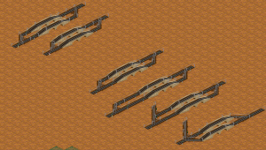
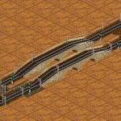
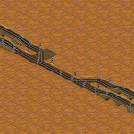
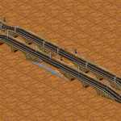
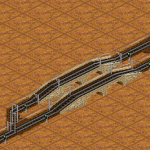
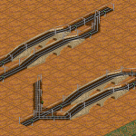
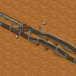

Building 101: double bridges and you
Introduction 
From the very start that you start building networks in OpenTTD you’ll need to have different tracks crossing each other. When you just start out this will be done by just simple level crossings which aren’t very efficient (except when using YAPP/PBS), later on you will start using bridges and tunnels to do this so different tracks don’t influence each other. Because bridges and tunnels don’t allow signals on/in them you will soon notice that you get slowdowns at them, the common solution is to use two bridges or tunnels for the same line and have their combined capacity compensate for the lack of signals. Unfortunately there are proper ways to do this and wrong ways to do it. Underneath I will discuss these and explain what you should and shouldn’t do.
For the rest of the article I will be talking about doubled bridges only, but all of this applies to double tunnels too as there is no difference between them.

  
A doubled bridge should always be as short as is possible so the signal gap is as small as possible and the least amount of disturbance to the trains is caused. Because of this you should also keep your split and join as close to the bridges as possible. This means that right before and after your bridges you have one straight piece of track for your signals and right before/after that you have the split or join. Any extra track counts towards the signal gap and is thus undesirable. Waiting bays in front of the double bridges are of no use and should be avoided. The double bridge is a special case of the normal track and it should be considered as normal track and not as a traffic balancer. I know this sounds counter intuitive but it is what it is and when you look at the history (see the introduction) you’ll see why.
If you need to cross two lines after each other it is important to note that your double bridges should never influence trains with regards to corner lengths. I don’t join and re-split tracks when the distance of the join/split is shorter than the train length + 2. If you consider the first screenshot below then it would technically be fine to use it with TL3 or shorter but I personally prefer to do this only for TL1 because the train fits in between the presignal and the signal which marks the end of the double bridges. For TL5 this should not be done as it is slow for one of the paths. Which length you prefer is up to you but if the distance between the join and the split is more than train length + 2 then you should always join in between! If it is not then you should not rejoin and keep two different tracks side by side, note that you should view these lines as bridges with signals and it is prefered not to make any other splits or joins on them. This is shown in the second screenshot below(note that this is a special case as no proper joining and splitting can be inserted here).



Since the introduction of YAPF (Yet Another Path Finder) we’ve had the auto-balancer. This balances trains over two or more tracks depending on the status of the first 10 signals on those tracks. This is very useful for doubled bridges as the occupied bridge has a higher penalty and is less likely to be chosen. Naturally this is the most simple and the easiest solution, it does have a big drawback though. Trains can enter the split while both bridges are occupied and thus wait longer than necessary. In normal traffic this isn’t much of a problem but at places where the traffic is likely to stop, at a merger for example, or during a jam this can become a big problem. This is why it is preferred never to use this type of bridge doubling.

The presignal/PBS way
This kind of doubling comes naturally if you want to solve the problem with the last one: use pre-signals or PBS to stop trains from entering the splitter when they shouldn’t. The preferred method here is the pre-signal doubled bridges as the PBS method can lead to pathfinder issues in some very special cases. The main reason to not use PBS is that pre-signals are more controllable and the general use of PBS is discouraged. The only reason why you should ever use PBS is when there is too little space to place all the pre-signals.
When using pre-signals you should always make sure that you use one way signals as they work equally good as two way signals (the reason that there is a difference is outside the scope of this post). You should never have a signal between the exit signal and the bridge as this breaks the entire workings of the pre-signals and the bridges may break horribly. This shouldn’t even be done if you want waiting bays: double bridges are meant to keep trains running and if you design something that is meant to have a buffer for stopped trains then there is something essentially flawed in your double bridges. For the most ideal situation see the screenshot to the right.

Although it is not entirely wrong it is not encouraged to make a regular split at the same place as the split for the double bridges. The main reason for this is because it leads to a signaling nightmare: should you put pre-signals only for the bridges? But then you block the branch line when both bridges are occupied as the trains get stopped before the split. Should you use regular signals? That leads to the same problem as described before and isn’t ideal either. The only real solution is to use PBS and rely on that too, but in general the use of PBS is discouraged. Another reason is that double bridges are a special case of normal track and you should view it as normal track in the most situations, except where you mix it with other things like splits and merges. That should never be done! It can lead to loads of different problems and it brings general ugliness to the game.

Double bridges and priorities 

Double bridges and synchronization
Keeping the network flowing under a high load is the main aspect of #openttdcoop. Due to a fundamental ‘flaw’ in OpenTTD trains take longer to cross diagonal track than straight track. This has quite the impact on doubled bridges as explained in this blogpost. You will barely notice the impact of this however, the only time you should notice is when are densily packed on the mainlines. That mostly happens when SML is involved or when the trains have very high acceleration. In all other cases it is still important to keep sync but not essential to building. I would advice to keep bridges in sync unless you need to move tracks around too much to keep correct corner lengths. There is nothing more annoying than needing to redesign your hub just because you’re trying to stick to something which isn’t going to influence the traffic.
Categories: Community News, Gameplay, Public Server
V453000 July 28, 2010 09:20
Great and very useful article that we clearly needed from what we have been able to see in the last games 😛
Puk July 28, 2010 18:32
Thank you for this article. =)
Altaree March 28, 2011 19:25
Great post. I wonder if the comments about PBS are still accurate 9 months later.
V453000 March 29, 2011 10:20
They definitely are, for example in case of the “Double bridges and splits” PBS is absolutely not working since it just jams by it’s slow response times (even with path_backoff_interval of 1). Other than that, Pre-signals just are better everywhere and there is no need for PBS at all, only in special situations